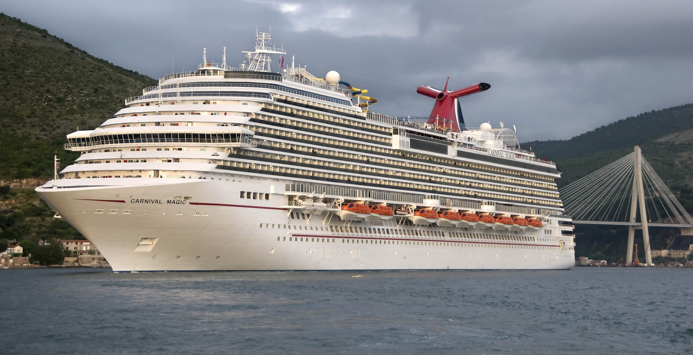
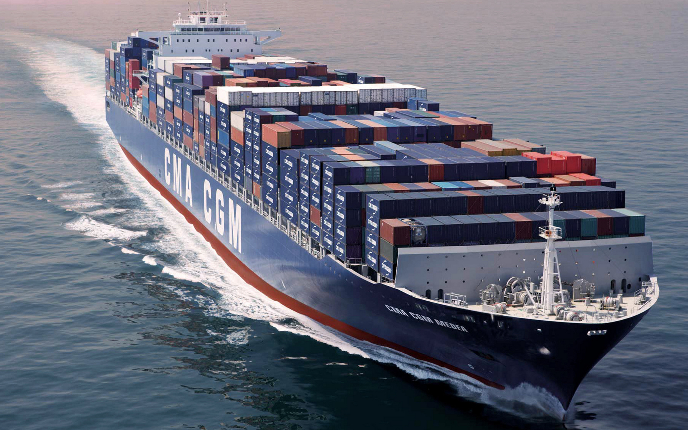
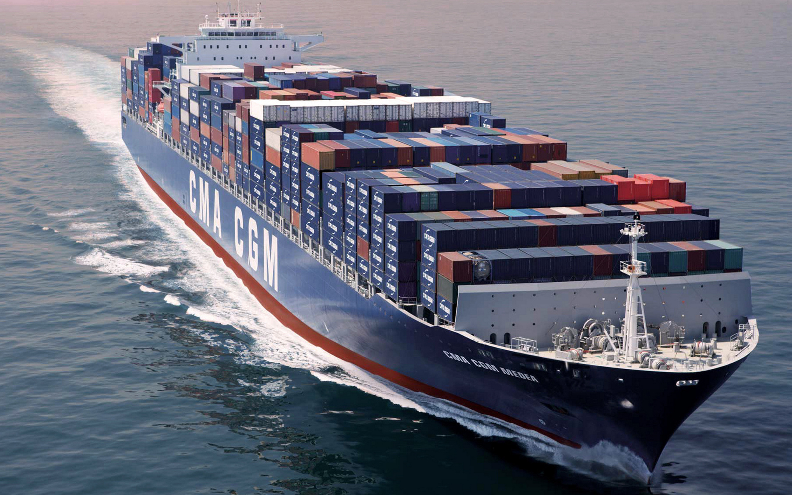

Ships
Cruise Ships
A Cruise Ship can cary up to thousands of Passengers and hundreds of crew that help, and some cruise Ships can also drive a whole ocean. They can be very big and can also pollute alot same like Airplanes.
Ways of propulsing ships
Ships don't always need to be powered by a propeller here are some other examples:
- paddles
- paddle wheels
- propleller
- sail
- some with nuclear propulsion

How a ship's engine works
A ships engine kind of works the same as the engine of a car the expolion spins the propeller but a car has less cylinders than a ship's engine so thats why it has more horse power. Heres how a ships engine looks like. This engine is from a cruise ship.
And here's how the ship engine works :
Ship Types
Here are some ship models, they can be used for:
- war
- passengers
- cargo
 

Ships are very usefull nowadays because now they don't pollute that much like airplane and that is good some ships use the water to spin the engine and to push the ship forward. Every ship must have the shape so they can float boats usually are propelled by almost enything like paddles, propeller and sails, boats are usually to small to have paddle wheels or nuclear propulsion. The ships in the past never ever look like the luxurious cruise ships today. Ships alow people to sail or to drive on sea.
Amazing ships
The biggest ship is the :
Symphony of the Seas.
The smallest ship is the :
Boomin Beaver
And the fastest ship is the :
USS Zumwalt
And the slowest ship is the :
Azul Fortuna
Different parts of an ship and their functions
A ship has alot of different parts. And I am going to explain what they and what their used for.
- Starboard side : the Starboard side is the right side of the ship.
- Port side : the port side is the left side of the ship.
- FWD : FWD is the front side of the ship.
- AFT: is the back side of the ship
- Bulbous bow : A Bulbous bow is protuding bulb at the bow(or front)of a ship just below the waterline. The bulb modifes the way the water flows around the hull, reducing drag and thus increasing speed, range, fuel efficiency and stabillity.
- Bow: the bow is the forward part of the hull of a ship or boat, and it needs to be tall enough to avoid easy contact with water and it must be designed to produce least drag.
- Anchor : The anchor is made of metal and attached to the ship by heavy chains. An anchor is used to keep the ship in place while waiting to dock.
- Deck : a deck is a permanent covering over a compartment or a hull of a ship. On a boat or ship the primary or upper deck is the horizontal structure that forms the roof of the hull, thereby holding the hull together, strengthining it and serving as the primary working surface.
- Keel : the Keel also called the backbone of a ship is a reinforced metal plate that helps hold the ship's structure toghther. The keel also determines the depth of water that the ship can safely operate in, and allows it to steer in one direction, without spinning around . The keel also acts as a weight to prevent the ship form capsizing or rolling.
- Hull : a hull is the part of a ship that extends below the waterline to cover and to protect water form entering in. Everything that is stored within the main ship structure is covered and protected by the ship's hull.
- Propeller & Rudder : propellers help ships to propel / move forward. These propellers are similar to an airplanes propeller. A ship's propeller can have different levels fo pitch and anywhere from three to six blades. The ship's rudder allows the ship to steer itself to the left and to the right when in operaton. A rudder must be able to move 35 degress to port side and starbord side to function safely.
- Stern : the stern is the back or aft-most part of a ship or boat.
- Funnel : A funnel is the smokestack or chimmney on a ship used to expel boiler steam and smoke or engine exhaust. All exhaust funnels are directed towards the aft of the ship to avoid interfering with navigation.